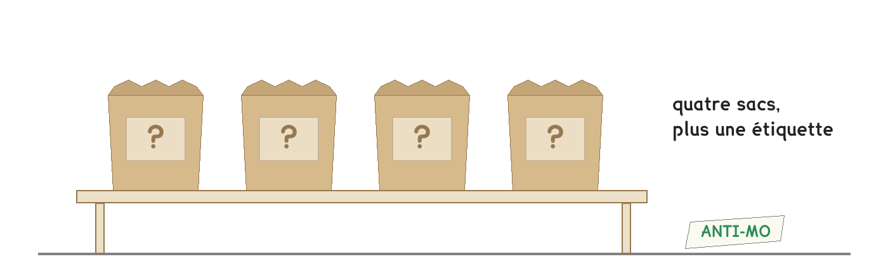
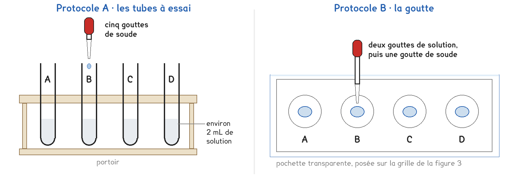
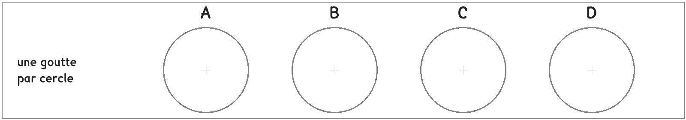

CAP et 2de Bac Pro · toutes spécialités · TP commun 2DE-10
Comment savoir ce que contient chaque sac, sans y goûter ni y toucher ?
3 figures
Sujet. Au fond d’un abri de jardin, quatre sacs de poudre ont perdu leur étiquette. On sait ce qu’ils contenaient : le sulfate de cuivre des tomates, l’anti-mousse du gazon, le même anti-mousse ouvert depuis l’an dernier, et le sel de déneigement. On ne sait plus lequel est lequel.

Problématique : comment savoir ce que contient chaque sac, sans y goûter ni y toucher ?
Au laboratoire, une pincée de chaque poudre est dans un tube bouché, noté A, B, C ou D. Le professeur en a fait une solution dans l’eau, une par flacon, avec la même lettre.
Document 1 · ce que contenaient les sacs. Dans l’eau, chaque produit se sépare en ions.
| Le sac | Le produit | Ses ions dans l’eau | Avec la soude |
|---|---|---|---|
| bouillie des tomates | sulfate de cuivre | Cu2+ et SO42− | …………………… |
| anti-mousse neuf | sulfate de fer II | Fe2+ et SO42− | …………………… |
| anti-mousse ouvert | sulfate de fer III | Fe3+ et SO42− | …………………… |
| sel de déneigement | chlorure de sodium | Na+ et Cl− | …………………… |
Document 2 · la banque de tests. Quelques gouttes de soude forment avec certains ions un solide coloré qui trouble la solution : un précipité. Sa couleur trahit l’ion.
| L’ion | cuivre Cu2+ | fer II Fe2+ | fer III Fe3+ | sodium Na+ |
|---|---|---|---|---|
| Avec la soude | précipité bleu | précipité vert, qui brunit à l’air | précipité rouille | aucun précipité |
Les ions sulfate et chlorure ne donnent aucun précipité avec la soude.
a) À l’aide du document 2, compléter la dernière colonne du document 1 : ce que la soude devrait montrer avec chaque produit. Puis entourer : Cu2+ est un atome · un ion · une molécule.
Deux protocoles répondent à la même question : une partie de la classe prend A, l’autre prend B, et on compare à la fin.

Protocole A · les tubes à essai. Un peu de chaque solution dans un tube, puis quelques gouttes de soude.
Protocole B · la goutte. Deux gouttes de chaque solution sur une pochette transparente, puis une goutte de soude.
b) Comparer les deux protocoles, puis choisir le vôtre avant de toucher au matériel. Dans la deuxième ligne, entourer.
| Protocole A | Protocole B | |
|---|---|---|
| Où se fait le test | …………………………… | …………………………… |
| La solution pour un test | environ 2 mL · deux gouttes | environ 2 mL · deux gouttes |
| Ce qui part aux déchets | …………………………… | …………………………… |
Je prends le protocole ……… parce que …………………………………………………………………… Le professeur peut vous imposer celui qui reste disponible.
c) Avant de tester, faire une hypothèse. Observer les quatre poudres sans ouvrir les tubes, noter leur couleur, puis deviner le produit d’après la couleur seulement.
| La poudre | A | B | C | D |
|---|---|---|---|---|
| Sa couleur | ……………… | ……………… | ……………… | ……………… |
| Le produit deviné | ……………… | ……………… | ……………… | ……………… |
Avant de commencer
Blouse, lunettes et gants pendant toute la manipulation. Les poudres restent dans leurs tubes bouchés. La soude du flacon est diluée : la concentrée ne quitte jamais les mains du professeur.
Sels de cuivre et de fer : nocifs, dangereux pour les milieux aquatiques. Rien à l’évier : ce qui les a touchés va au bidon des métaux.
Chaque compte-gouttes reste dans son flacon, et ne touche jamais la solution.

d) Schématiser le test d’une solution dans votre protocole, de profil, et nommer le matériel : tube à essai, portoir, compte-gouttes, pochette, flacon.
Le schéma se dessine sur la feuille du TP.
e) Relever vos observations, puis identifier l’ion métallique et le produit.
| La solution | A | B | C | D |
|---|---|---|---|---|
| Sa couleur | ……………… | ……………… | ……………… | ……………… |
| Avec la soude | ……………… | ……………… | ……………… | ……………… |
| Dix minutes plus tard | ……………… | ……………… | ……………… | ……………… |
| L’ion métallique trouvé | ……………… | ……………… | ……………… | ……………… |
| Le produit | ……………… | ……………… | ……………… | ……………… |
Les deux protocoles remplissent le même tableau : c’est lui qu’on compare à la question h.
f) Les déchets de votre protocole. Une goutte vaut environ 0,05 mL. Calculer le volume de mélange envoyé au bidon par un test, puis par les quatre.
| Pour un test | La solution | La soude | Le mélange |
|---|---|---|---|
| Ce qu’on verse | ……………… | ……… gouttes | |
| Volume (mL) | ……………… | ……………… | ……………… |
Pour les quatre tests : ……………… × 4 = ……………… mL. Puis cocher où va chaque déchet.
| Le déchet | évier | bidon des métaux | pot des déchets solides | poubelle |
|---|---|---|---|---|
| Le mélange et son précipité | ||||
| La première eau de rinçage | ||||
| Le papier qui a essuyé la pochette | ||||
| Les gants, en fin de séance |
g) Votre hypothèse de la question c est-elle confirmée ? Peut-on reconnaître un produit à la couleur de sa poudre ? D’après ce que devient le précipité du fer II à l’air, expliquer pourquoi le vieil anti-mousse a changé.
h) Comparer avec un groupe qui a pris l’autre protocole. Trouve-t-il le même produit dans chaque sac ? Combien de fois moins de déchets le protocole B produit-il ? Quel protocole montre le mieux le fer II qui brunit ?
Volume de A ÷ volume de B = ……………… ÷ ……………… ≈ ………………
i) Répondre à la problématique en deux phrases, pour le jardinier : comment reconnaître chaque sac, et lequel est lequel ?
Ce que ce TP a établi, et qui vaut pour toute solution :
À RETENIR
Un ion est un atome, ou un groupe d’atomes, qui a perdu ou gagné des électrons.
Un test caractéristique reconnaît un ion dans une solution. Avec la soude, l’ion cuivre donne un précipité bleu, l’ion fer II un précipité vert qui brunit à l’air, l’ion fer III un précipité rouille.
La couleur d’une poudre ne suffit pas à la reconnaître. Ce qui contient des ions métalliques va au bidon des métaux, jamais à l’évier.
Le professeur ajoute du chlorure de baryum, qui révèle le sulfate, et du nitrate d’argent, qui révèle le chlorure. Entourer les précipités blancs, puis le réactif qui confirme le sel.
| Le réactif | A | B | C | D |
|---|---|---|---|---|
| Chlorure de baryum | oui · non | oui · non | oui · non | oui · non |
| Nitrate d’argent | oui · non | oui · non | oui · non | oui · non |
TP commun de physique-chimie, toutes spécialités. Le travail se fait sur la feuille du TP : cette page en est la version à l'écran, sans les lignes à remplir. Rien n'est enregistré.